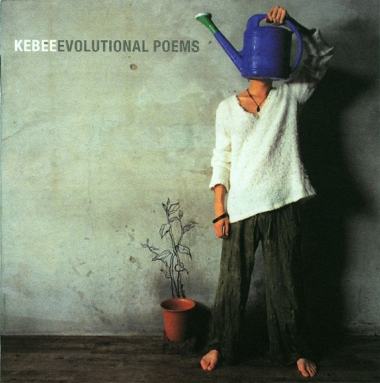
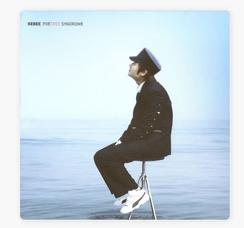

지금으로부터 10년도 훌쩍 넘은 중학생 고등학생 시절, 나는 다른 음악장르에는 별 관심이 없는 소위 말하는 락덕이었다. 지금 BTS를 좋아하는 학생팬들처럼, 용돈을 모아 앨범을 사고 스티커를 필통이나 가방에 붙이고 친구들과 꺅꺅거리곤 했었다. 영국 락밴드들을 정말 좋아해서 뮤직비디오도 매일 보았는데 당시에는 유튜브가 없어서 네이버나 다른 사이트를 통해 비디오를 보았다. 60년대의 비틀즈부터 시작해서 블러, 오아시스를 거쳐 뮤즈, 프란츠 퍼디난드 등 영국에서 한가락 했던 밴드들은 많이 들었다. 고등학교를 다닐 때에는 영어를 그리 잘하지 못해서 영어 가사의 반도 못 알아들었지만 말이다. 인터넷에서 가사를 찾아서 모르는 단어를 찾아 하나하나 외웠던 기억이 난다.
그 때는 외국 음악이 너무 신기하고, 새로운 밴드들을 알아가는게 얼마나 재미있던지. 한국 아이돌 음악이나 인디도 종종 듣긴 했지만 (나중에는 샤이니에 푹 빠졌지만) 그래도 대부분의 시간을 영국락을 들으면서 살았다. 그러던 어느날 친구의 네이버 블로그에 올라온 어떤 인디힙합곡의 가사를 보게 되었다. 정확히 기억은 안나지만 아마 키비(Kebee)의 곡이었던 것 같다. 그 친구의 영향으로 나는 키비의 음악과 가사를 찾아보게되었고, 감성힙합이라는 키비의 앨범에 푹 빠졌다. 한동안은 그 좋아하던 락음악도 줄이고 키비를 시작으로 소울컴퍼니의 음악에 푹 빠져살았다.

키비1집 - Evolutional poems

키비2집 - Poetree syndrome
키비의 음악을 알기 전까지만 해도 힙합은 나에게 낯선 장르였다. 누자베스를 통해 재즈힙합 조금 듣긴 했지만 무지했던 나는 힙합이라고 하면 거칠고 세보이는 랩퍼들이 공격적으로 랩을 하는것만을 상상했었다. 이런것도 힙합일 수 있구나. 현대에 랩이라는 이름을 붙여서 새로운 것처럼 느껴지지만, 사실 메시지가 담긴 언어를 운율에 맞춰 노래한다는 점에서 시조를 읊는 것과 뭐가 그리 다른가. 문학소녀였던 나에게 이처럼 맞는 음악이 없었다.(이후 인문대에 진학합니다.)
키비의 곡들은 이해하기 쉬우면서도 아름답고, 공감할 수 있다. 그는 자신의 젊음과 청춘, 소년과 소녀를 이야기한다. 내가 기억하는 그의 음악들은 주로 1,2집인데, 이 앨범을 발매하던 당시 키비 역시도 20대 초반으로 어렸기에 가능했을지도 모른다. 어린아이가 어른이 되어가는 과정에서 느끼는 수 있는 불안함과 예민함, 희망을 노래하는 음악들이 주를 이룬다.
한국에서 10대를 보내면서 입시를 거쳐온 사람이라면 그의 곡에 정말 공감할 수 있다. 현재(2018년 기준)는 야자하는 학교가 거의 없다곤 하지만 2000년대 중후반, 대략 10여년전 필자가 고등학교를 다닐때만해도 야자를 하지 않는 학교를 찾는게 어려웠다. 엄청나게 긴 공부시간을 버티며 (아침 8시정도까지 등교해 저녁 10시 넘어서 집에 돌아갔다. 학교에 14시간 이상 있었고, 그게 옳은 학생의 길이라고 생각했다. 모두가 당연하게 여겼고. 지금 생각해보면 이런 아동학대가 없는데 말이다.) 하루하루 다가오던 수능시험과 미래를 걱정하던 고등학생의 나에게 그의 음악은 너무나도 큰 힘이 되어주었다. 그 때는 공부를 열심히 하여 좋은 대학에 가는게 최고라고 생각했다. 그렇지 못하면 내 인생이 결정된다고 믿었었다. 교실 한구석에서 친구와 이어폰을 나누어끼고, 키비의 노래를 함께 흥얼거렸던 것은 내 학창시절의 가장 아름다운 기억으로 남아있다. 그 때의 초조함 불안함까지도 음악과 함께 아련하게 기억될 정도로.
용돈을 모아 앨범을 사고, 홍대까지 가는 버스를 타고 처음으로 가본 홍대 인디 공연이 키비의 공연이었다. 영상으로만 보던 그가 앞에 있었고, 그게 참 신기했었다.
공연이 끝나고 시디에 사인을 받고 악수를 했는데 그 때 조금 어색해하던 그가 기억이 난다. 그 이후로 수많은 크고 작은 공연을 다녔지만 첫 홍대 공연이었던 그날이 가장 특별하게 기억된다.
20대 초반, 소울컴퍼니가 해체할때까지 나는 그들과 함께 많은 시간을 보냈다. 내 인생 가장 아름다운 시기였고 그렇기에 더욱 특별한 뮤지션으로 기억될 키비.
가장 추천하는 곡들
고3후기, 잃어버린 아이들의 숲, 미운오리새끼, 스물하나, Feeling you.
고3후기
흐리멍텅하게 지나갔던 나의 유년시절의 시간들은 이미 먼날의 추억이 되었고
평생 내 귀에 결코 울리지 않을 것만 같던
고3교실의 새벽종 소리는 어느새 내 앞으로 뚜렷이 다가왔어
나보다 한참 앞선 친구들을 보며 반성과 후회만이 남았고
작지만 소중한 성과를 참 열망하고 있었던 나였건만
불안과 초조함만이 내 안에 가득 찼지.
미로에 갇혀서 길을 잃어버린 나를 봤지.
그때 난 자그마치 300여일이란 시간이 주어졌다는 사실을 깨달았고
그리 암울하지만은 않은 내 자신을 굳건히 믿기로 했어.
시작은 다름 아닌 지금부터 일테니 그것으로 됐어.
최선의 노력을 다해서 힘닿는 데까지 매서움에 맞서 뛰어야겠어.
한 가지 목표에의 확실함.
오직 그것 하나만큼은 결코 한치 앞도 볼 수 없는
내 발걸음의 나침반이 되어 나를 지켜주어 왔지
내 발걸음의 나침반이 되어 나를 지켜주어 왔지
어느새 한두 장씩 넘어가는 달력에 잠시 눈을 돌렸을 때
나의 노력으론 절대 다신 돌이킬 수 없는 미친 듯이 내린 지난 겨울눈
그 아름다움도 이미 녹아내렸다는 현실이 내 눈에 아련히 맺혔지.
지금의 내 처지. 너무도 나약하지만
미개척지를 향한 발걸음 그 자체로써 난 너무도 행복했어.
그래서 쉬지 않고 도전할 수 있었지.
쉴 새 없이 나를 꺾는 결심과 내게 꺾이지 않으려는 결심 속에서
끝까지 달려갈 힘을 얻었고,
지금은 너무도 어렵고 고되도
훗날에 더 넓고 깊은 바다 속에서 헤엄치겠다며 다짐했어
서늘한 바람에 내 뺨이 어느새 붉게 물들었고
스스로 택한 이 어려운 길은 서서히 저물어 가고 있어.
한 가지 목표에의 확실함. 오직 그것 하나만큼은 결코 한치 앞도 볼 수 없는
내 발걸음의 나침반이 되어 나를 지켜주어 왔지
내 발걸음의 나침반이 되어 나를 지켜주어 왔지
알 수 없는 긴장감에 사로잡힌 시험전날,
여태껏 서로를 지탱해주던 친구와 전활 붙잡고
대체 우리가 지금껏 무엇을 찾고 있었던가에 대해서 얘길 했지.
"이건 누가 우리에게 품고 있는 기대치 때문이 아닌 나 자신을 위한 일이겠지."
이런 말을 해주는, 지친 내 어깨를 기댈 친구가 있다는 것만으로도 커다란 힘이 됐지. 시험 당일. 집을 나서는 길에
'내가 만일 오늘 실패해도 툭툭 털고 과감히 일어설 수 있을까.'
라고 머릿속 깊숙한 곳에서 울리는 소리를 들었지.
익숙한 골목이 오늘따라 괜히 낯설어.
우리 집에서부터 저 끝까지 낙서로 가득 차 있는 시멘트벽은 옛날처럼 그대론데
내 발걸음은 제자리에서 망설여…….
한 가지 목표에의 확실함. 오직 그것 하나만큼은 결코 한치 앞도 볼 수 없는
내 발걸음의 나침반이 되어 나를 지켜주어 왔지
내 발걸음의 나침반이 되어 나를 지켜주어 왔지
내 발걸음의 나침반이 되어 나를 지켜주어 왔지
내 발걸음의 나침반이 되어 나를 지켜주어 왔지
미운오리새끼
나 태어난 곳은 사실 이곳이 아니리라
검게 탄 지금의 가족에 속해 살아야 하겠지만
내 어미의 복이 하나도 없기에 나는 아직도 여기에 서 있네
멋진 새가 될 거리엔 절대 꺼릴게 없지
내 몇일에 걸친 이 변신을 어찌 당해내리
사실 난 실수로 이곳으로 왔으므로
이런 진실을 당신의 가슴으로 받아들여 주오
조금만 더 세상이 나를 축으로 돌아갔으면
이미 난 백조의 호수에 몸을 담구며 시조라도 한 구절 읊을테나
이런 괜한 생각은 아무런 소용도 없으므로
결국은 허무들로 내 속을 채워가도
평생을 다 받쳐도 입어보지 못할 챔피언 갑옷
비굴하게 살아봐야 얻는건 하나도 없는 바보
이런식으로 살 바엔 차라리 내게 죽음을 다오
백조의 날게는 그대 속에 있다네
그대 속에 있는걸 이제 공개하게
퍼득이는 날개를 멋부리며 날게 젊은지를 앎으로 더 큰 힘을 갖게
젊은이여 당신의 주위를 돌아보게
무엇이 당신의 고갤 떨구게 만드는데
주위의 사람들은 이미 승리에 취해있네
그 뒤에 감춰진 노력에 의해 얻는 희생 당신의 기대에 비례하는 결과물
그건 자신의 삶을 뒤집어 업는 변화를 겪지 않고서는 절대 얻을 수 없다는 이야기
시간이 지남에 결말을 말해주리라
그토록 당신이 갈구해왔었던 꿈, 희망
준비가 덜 됬다는 말 뿐이라면
인생의 값어치를 더욱 빛낼 수 있는 기회는 모두 끝이란걸
당신이 무심코 지나쳐갔던 시 한편 마저 당신을 기다려
알던 모르던 당신을 기다리는 성공기회
환경에 결코 지배당하지 않겠다던 기세를 이어나가
각오뒤에 바로 뛰게
백조의 날게는 그대 속에 있다네
그대 속에 있는걸 이제 공개하게
퍼득이는 날개를 멋부리며 날게
젊은지를 앎으로 더 큰 힘을 갖게
젊은지를 앎으로 더 큰 힘을 갖게
따라오게 정말로 날아볼 생각이라면
바라보게 하늘의 높음을
자신의 목숨을 걸고서 도전을 함으로써
놀라운 발전을 경험할 수 있다는 것
꿈을 꾸듯 구름사이를 누비는 내 모습은
꼭 춤을 추는 것 처럼 원을 그리며 하늘을 나는
거위떼 저 밑에서 소리치네
지금 서있게 만들어 준 것은 저 아래 오리떼
옛 가족을 나는 알고 있소
나를 바라봄을 통해 역시 당신도 당연히 날 수 있소
victory, 기도를 하는 마음으로
새로운 시도의 필요를 느끼는 당신의 혼
백조의 날개를 그대 팔에 달게
백조의 날개를 그대 팔에 달게
백조의 날개를 그대 팔에 달게